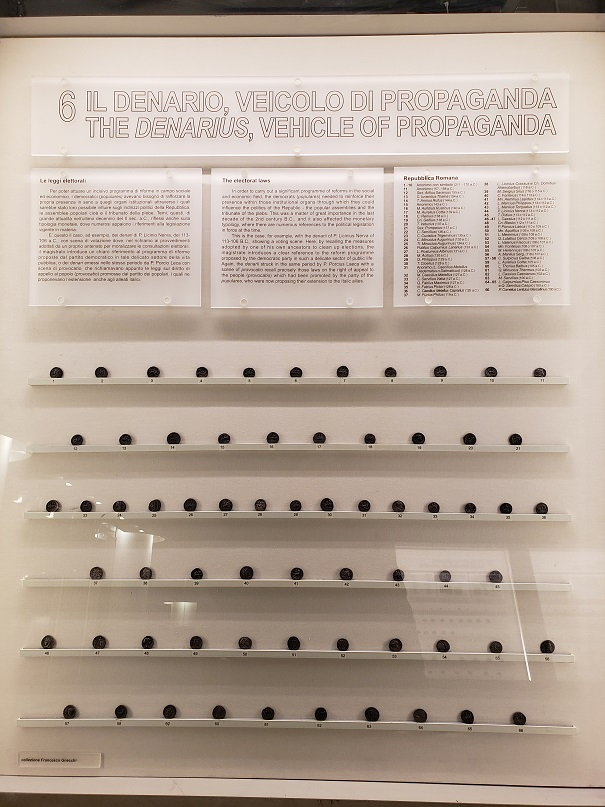

Algunas Monedas Romanas


Autoridad para acuñar monedas
Al contrario que muchas monedas modernas, las monedas romanas tenían valores intrínsecos. A pesar de contener metales preciosos, el valor de una moneda era más alto que su contenido de metal precioso, así que no eran lingotes. Estimaciones del valor de un denario varían entre 1,6 y 2,85 veces su contenido de metal; se considera que esto equivale al poder adquisitivo de diez libras esterlinas modernas (comparando precios de pan) y aproximadamente tres días de paga de un legionario.1
La mayoría de la información escrita sobre monedas que sobrevive es en forma de papiros preservados en el clima seco de Egipto. El sistema monetario que existió en Egipto hasta la época de la reforma monetaria de Diocleciano era un sistema cerrado basado en el devaluado tetradracma. Aunque se puede considerar que el valor de esos tetradracmas era equivalente en valor al denario, su contenido de metal precioso era mucho más bajo. Evidentemente, no todas las monedas en circulación contenían metales preciosos, al ser el valor de estas monedas demasiado elevado para ser conveniente para compras ordinarias. Una dicotomía existía entre las monedas con valor intrínseco y aquellas con solo un valor simbólico. Esto se refleja en la infrecuente e inadecuada producción de monedas de bronce durante la república; desde la época de Sila hasta la de Augusto no se acuñaron monedas de bronce en absoluto. Incluso durante periodos durante los cuales se crearon monedas de bronce, su producción era a veces cruda y de baja calidad.
Durante el Imperio romano había una división en la autoridad para acuñar monedas de ciertos metales. Aunque se permitió a numerosas autoridades locales acuñar monedas de bronce, no se autorizó a ninguna autoridad local acuñar monedas de plata. Sobre la autoridad para acuñar monedas, Dión Casio escribe: "No se debería permitir a ninguna de las ciudades tener su propia moneda o sistema de pesos y medidas; se les debería exigir a todas utilizar las nuestras." Solo la propia Roma acuñaba monedas de metales preciosos, y la fábrica de moneda estaba centralizada en Roma durante la república y durante los primeros siglos del imperio. Algunas provincias orientales acuñaron monedas de plata, pero esas monedas eran denominaciones locales destinadas a circular y a satisfacer necesidades locales. La emisión de monedas de bronce se puede considerar de poco valor, y de poca importancia para el gobierno central de Roma, porque los gastos del Estado eran elevados y se podían pagar más fácilmente con monedas de alto valor. Se sabe que durante el siglo I un as sólo podía pagar una libra de pan o un litro de vino barato (o de acuerdo con inscripciones en paredes pompeyanas, los servicios de una prostituta barata). La importancia y la necesidad de denominaciones más pequeñas para la población de Roma eran posiblemente altas. Prueba de esto puede verse en las numerosas imitaciones de monedas de bronce claudianas que, aunque posiblemente no autorizadas por Roma, parece que fueron toleradas y se acuñaron en grandes cantidades. El Estado tenía poco incentivo o deseo para satisfacer la necesidad de monedas de bronce, porque utilizaba monedas principalmente como medios para pagar al ejército y a los funcionarios.
Orígenes